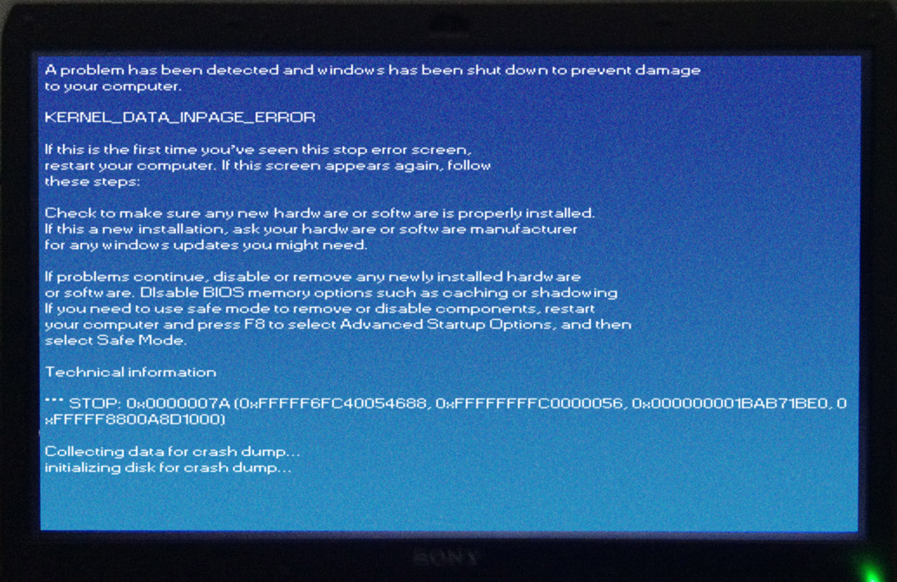
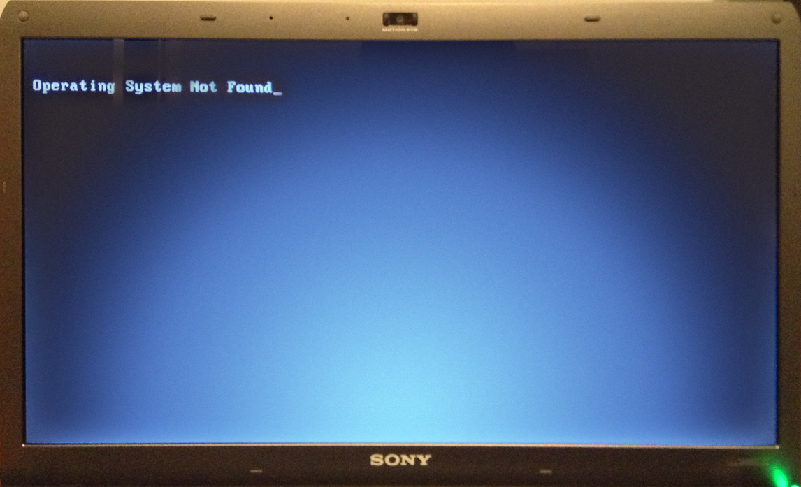

Excuses, Excuses
January 15, 2013
Well that was an unproductive break.
As you may have noticed, a little more than a month has passed since the last build of GIMU. I have my excuses reasons.
I mean, come on. Did you see that Steam Sale?
You can't ignore those savings!
While we're on the topic of winter holidays, I'll discuss mine. There are three things I got that I want to talk about in particular, including a drawing tablet, some RAM and iTunes credit. The drawing tablet is really nice with Photoshop. Except that I have no idea what I'm doing. I've been working on that.
I also got 8GB of RAM for my laptop! If you think I'm talking about the animal, you might want to skip this paragraph. I upgraded from 4GB which lets me do more things at once. Like play tekkit and host a server run Unity, Photoshop, Blender, Chrome, iTunes and like a billion Explorer windows at the same time. True story: my alt-tab menu took up 3 lines while making the new render on the main page. The new RAM also pointed out that I may or may not have a problem with my computer as shown here:

Side-note: I Photoshopped the screen to make it less blurry than it was. But the text is the same, including the lowercase proper noun, weird spacing, and the widened font. The error codes may not be accurate. Those, i's, I's, 1's; 6's, 8's and 0's look so similar when you take a picture in the dark with your iPod without stabilizing the camera...

And then the Operating System gets misplaced. Luckily, checkdisk can find it pretty easily, so I only lost unsaved data. And by that I mean some of my Left 4 Dead download.
So I've been working on that. It's weird, though because I upgraded the RAM, but the error points to the drive. I've been switching between drives, RAM and cleaning fans, though, so chances are I'll figure it out eventually. Also, please feel free to observe the glowyglowy power button pictured above on the right.
Also, with the iTunes money mentioned before, I've been addicted to a new album that just came out on the 8th. I love it. Bonus points if you can figure out the album in question.
Also also, Unity 4.somethingsomething has come out. It's probably been out for a while, but I've been playing Left 4 Dead reinstalling Windows and messing with hardware stuffs. What it means for you is that the game will probably get better in the next release. You can also play it on your Über-Hax Linux Box.
What it means for me is that the game is probably broken in a number of ways that I'll have to deal with that I didn't even realize were possible.
I was going to include concept images here, but this blog post is long enough. So have a new tab. If you've been going through the source code of the website, you've probably been hyped up for a while, but now the wait is finally over!
Since you've read this far, I'm going to let you on to a secret. On the homepage, type 'javascript:random();' into the URL bar (without the quotes. Duh guys. Duh).
Actually, make that two; I'm going to occasionally start leaving more notes as comments in the source code of the website. There are three unique ones already. See if you can find them.